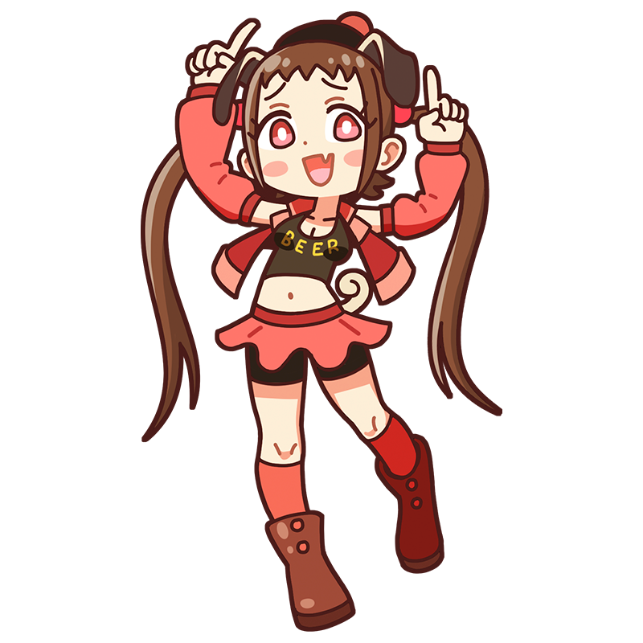

うぷぷ～！ ひっどいアホ面ねぇ～っ！
ホガースちゃんが絵に残してあげるわ！
ホガース
風刺画描かせりゃ英国一！
犬好きミューズは何を見る？
18世紀のイギリスで活躍し、同国の美術を切り開いたミューズ。人間の姿をよく観察しては、世の中の矛盾を絵にするのが得意。その挑発的な態度とは裏腹に無類の犬好きで、自分の愛犬を作品に何度も登場させている。
様式
ロココ
出身国
イギリス
代表作
- "当世風結婚"
- "ビール通りとジン横丁"
- "残酷の4段階" など
ホガースといえばこの一枚！
当世風結婚
当世風とは「今どき」という意味。貴族の力が強かった時代、金と権力にとらわれて結婚した若き夫婦が落ちぶれ破滅していく様子を皮肉を込めて描いた6枚組の連作絵画。あえて堕落しきった人々の様子を痛烈に描くことで市民を啓蒙する作品は当時よく見られたものであり、ホガースはその名手であった。
制作年
1743 - 1745年
技法・材質
油彩、キャンバス
寸法
69.9 x 90.8 cm(第2幕)
所蔵
ナショナル・ギャラリー
(イギリス)
作品画像出典: https://commons.wikimedia.org/wiki/File:Marriage_A-la-Mode_2,_The_T%C3%AAte_%C3%A0_T%C3%AAte_-_William_Hogarth.jpg
ホガースってどんな芸術家？
ウィリアム・ホガース
18世紀イギリスの美術発展の礎を築いた画家。フランスのロココ様式の影響を受けながら、貴族や社会の風潮を題材とした風刺画で独自の地位を築いた。貴族や社会問題を批判する痛烈な風刺画で大衆の心を掴み、それまで目立った画家のいなかった英国美術を大いに発展させた。また、自作の海賊版が広まった経験から著作権の前身となる法制定にも関わるなど、画業以外でも大きな功績を残した。
フルネーム
William Hogarth
誕生
1697年11月10日
死没
1764年10月26日(66歳没)